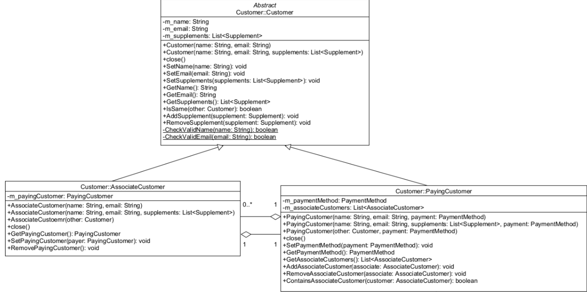
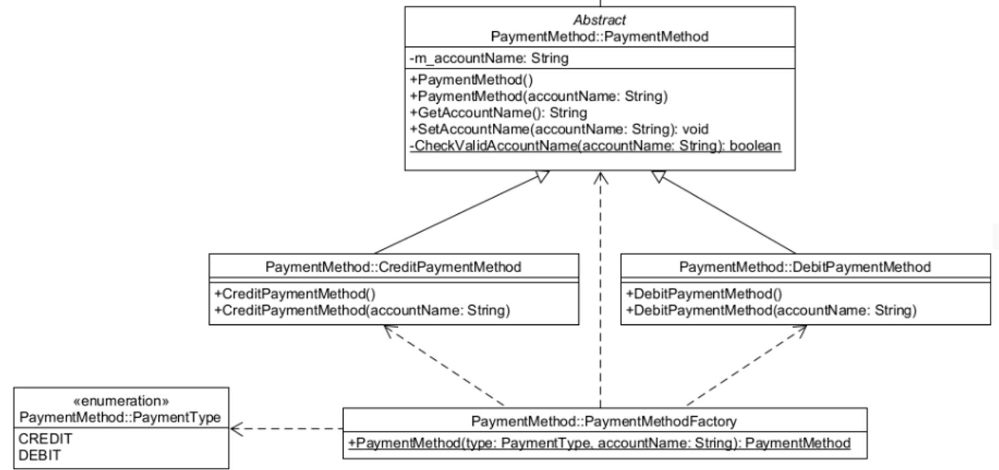
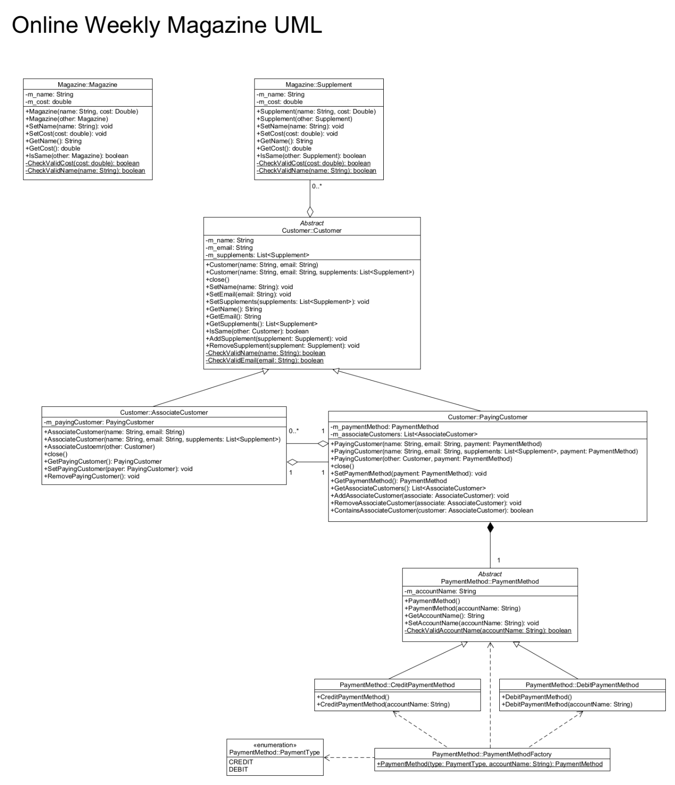

Weekly Magazine Service
A Weekly Magazine Service backend written in Java. Includes customers (paying and associate), payment methods (credit and debit), magazines, and supplements.

This project is an assignment for ICT373: Software Architectures. The assignment requires us to create the backend for a magazine service. Assignment 2 will have us create the front-end for the magazine service in JavaFX.
Unfortunately, this project is not yet complete. As of now, the program only outputs to a CLI. As stated before, come Assignment 2, this project will have a full application interface.
Customer Design
The system models two types of customers: PayingCustomer and AssociateCustomer, both inheriting from a common Customer superclass. This reduces duplication of shared data such as name, email, and subscribed supplements.
Key design decisions:
- Used inheritance to share common data and behaviour between customer types.
- Stored Supplements by reference to ensure global updates (e.g. price changes) propagate across all customers.
- Modelled a bidirectional relationship between PayingCustomer and AssociateCustomer.
- Enforced a constraint preventing deletion of a PayingCustomer while associated customers still exist.
This design ensures flexibility, avoids data duplication, and maintains consistency across the system.
The customer UML is shown below:

Payment Method Design
Payment methods are implemented using inheritance and a factory pattern to allow flexible creation at runtime.
- PaymentMethod defines shared data such as account name and validation.
- Credit and Debit extend the base class and are designed for future extension.
- A factory pattern is used to create payment types dynamically using an enum-based system.
This approach allows new payment methods (e.g. PayPal) to be added with minimal changes to existing code.
The payment UML is shown below:

Full UML
Shown below is the full UML for the backend.

Demo Video
A short demo showcasing the back-end using a CLI.